オルム攻略ガイド ヒーローウォーズ：ドミニオン・エラ
- 著者：アレクサンドレ・ドミンゴス。 .
オルムは、タンクの後ろで静かに待つだけのサポート・タイタンではありません。前方にいる味方を選び、その味方を中央の敵と結び付け、受けた圧力を遅れて発動する反撃へ変えます。相手が守られた対象を激しく攻撃するほど、ルイナス・ボンドの終了時はより危険になります。
この仕組みにより、オルムは魅力的である一方、扱いが難しいタイタンでもあります。彼の価値は発動タイミング、編成、そして蓄積したダメージを返せるまでリンクされた味方を生存させられるかどうかに左右されます。このガイドでは、計算式を分かりやすく説明し、最初にどこへ投資するべきかを示し、究極スキルが戦闘を決めるまでの時間を確保できるチームを紹介します。
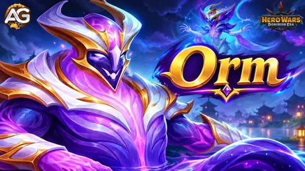
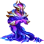
📋 オルム攻略ガイド目次
オルムとは？
オルムは、2026年10月のクラッシュ・オブ・ワールドで登場したディストーション属性のサポート・タイタンです。戦場ポジション12で戦い、前方の味方を守りながら、蓄積したダメージを中央の敵へ転送することを得意とします。基本攻撃は3秒ごとに1,261,688の物理ダメージを与えますが、オルムを育成する本当の理由は通常攻撃ではなく、ルイナス・ボンドです。
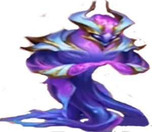
- 役割： サポート
- 属性： ディストーション
- 戦場ポジション： #12
- 基本攻撃： 3秒ごとに1,261,688の物理ダメージ
- 最大HP： 8,662,432
- 最大パワー： 234,203
- 相性の良い味方： 耐久力の高い前衛タイタン、アレクト、ヴァルドゥル、ディストーション・タイタン3体のコア編成
オルムは、相手がこちらの前線へダメージを集中させる状況で最も強さを発揮します。ルイナス・ボンドは、リンクされた味方が6秒間に受けるダメージを20%だけに抑え、その後、残りの蓄積ダメージを中央の敵へ送ります。即時バーストだけを狙うチームよりも、耐久力の高い編成と慎重な手動タイミングを重視するチームで真価を発揮します。
オルムの長所・短所 - ヒーローウォーズ：ウェブ＆フェイスブック
✅ 長所
- リンクされた前方の味方が6秒間に受けるダメージを20%だけに軽減します。
- 敵の攻撃を、中央の敵に対する遅延ダメージへ変換します。
- ルイナス・ボンドには、物理攻撃力10,000%という非常に高い係数が表示されています。
- 通常は最も強い圧力を受けるポジションを守れます。
- プレイナー・ストームを発動するディストーション・タイタン3体のコア編成で特に強く機能します。
- 継続ダメージに依存するチームを罰することができます。
❌ 短所
- リンク中に守られた味方がほとんどダメージを受けない場合、究極スキルの価値は低くなります。
- 中央の敵は自動的に選択されます。
- リンク終了後の回復、スタン、デバフ解除、永続シールドはありません。
- 最大限の価値を引き出すには、味方と正確なタイミングが必要です。
- 火、水、大地はディストーションに対して自然な属性上の優位性を持ちます。
- ダンジョンでは混合部屋にしか参加できません。
オルムのスキルガイド - ヒーローウォーズ：ドミニオン・エラ
ルイナス・ボンドは前線を守り、転送したダメージを蓄積し、決定的な6秒後にその圧力を敵陣中央へ返します。
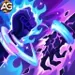
スキル1：ルイナス・ボンド
ゲーム内説明： 前方の味方1体と中央の敵を6秒間リンクします。リンクされた味方が受けるダメージは20%だけになります。残りのダメージは蓄積され、スキル終了時にリンクされた敵へ与えられます。
スキル解説： オルムが、前方の味方と中央の敵の間に保護ケーブルを設置すると考えると分かりやすいです。次の6秒間、味方が受けるダメージは通常の5分の1だけになり、残りの5分の4は蓄積されます。時間が終了すると、蓄積された圧力がリンクされた敵に対して解放されます。戦闘が静かな時間帯ではなく、相手が前線へ激しい攻撃を仕掛けようとするタイミングで使用してください。
保護効果：(リンクされた味方が受けるダメージは20%。残りの80%は蓄積される)。
表示ダメージ計算式：(オルムの物理攻撃力 × 10,000% = 126,168,800の物理ダメージ)。
表示されている係数は、ルイナス・ボンドに記載されたダメージ倍率を表します。実際の結果は、蓄積ダメージ、防御、属性相性、レベル、その他の戦闘補正にも左右されます。
PvP育成優先度： 非常に高い — 正しいタイミングで使えば、敵のバーストダメージから前線を守り、その後で中央の対象を罰することができます。
ダンジョン育成優先度： 低い — オルムが役立つのは混合部屋だけです。まず大地、火、水、回復を優先してください。
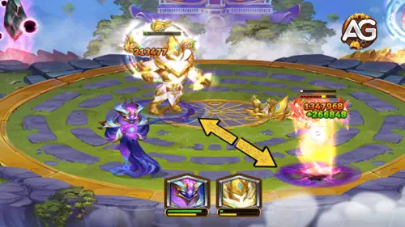
メイントーテム：ディストーションのエレメンタルスピリット
プレイナー・ストーム： ディストーション・タイタンが3体以上いると使用できます。致命的な破片が15秒間戦場を覆います。1秒ごとに、ストームがランダムな敵1体をランダムな方向へ押し動かします。ゾーン内での移動は、移動距離に応じて1,067,141ダメージを与えます。
オルムは、ストーム中に前方の味方を守りながら、ディストーション3体の発動条件を満たす助けになります。ルイナス・ボンドが有効な間、繰り返される押し出しが敵の編成を乱します。
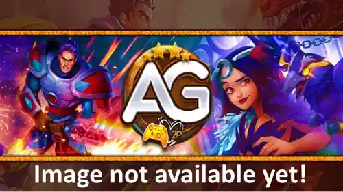
タイタン、オルムのおすすめスキン - ヒーローウォーズ：ドミニオン・エラ
オルムは、ルイナス・ボンドが終了するまで生き残る必要があります。PvPではエレメンタルアーマーを最優先し、HPは汎用性の高い安全な第2投資候補です。
デフォルトスキン
HP：+1,022,985
PvP育成優先度： 高い — 追加HPはあらゆるダメージタイプに対する生存力を高め、オルムがリンクを完了するまでの時間を増やします。
ダンジョン育成優先度： 低い — 混合部屋では有用ですが、主要な属性タイタンより先に育てるべきではありません。
プライモーディアルスキン
エレメンタルアーマー：+49,065
PvP育成優先度： 非常に高い — エレメンタルアーマーは、火、水、大地からの危険な圧力に耐え、リンクを解放するまで生き残る助けになります。
ダンジョン育成優先度： 低い — オルムが参加できる混合部屋でのみ強力です。
おすすめスキン順： 本格的なPvP運用では、まずプライモーディアルスキン、その後にデフォルトスキンです。プライモーディアルスキンが利用できない場合でも、デフォルトスキンの強化は安全な選択肢です。
オルムのアーティファクト育成優先度 - ヒーローウォーズ：ドミニオン・エラ
オルムのシールは個人強化として最も強力です。クラウンはオルムの生存を支え、ゾルヴァルズ・ライトは究極スキル使用後にチーム全体の圧力を高めます。
ゾルヴァルズ・ライト
エレメンタルダメージ：+479,475 | パワー：+32,604
PvP育成優先度： 中～高 — オルムが究極スキルを使用した後、チームのダメージを強化します。ただし、最初にエネルギーを獲得する必要があります。
ダンジョン育成優先度： 低い — 混合部屋でのみ有用です。
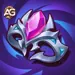
クラウン・オブ・ディストーション
エレメンタルアーマー：+175,467 | パワー：+55,973
PvP育成優先度： 高い — クラウンは、オルムが6秒間のリンク終了まで生き残る助けになります。
ダンジョン育成優先度： 低い — 混合部屋でのみ価値があります。
ディストーテッド・バランス・シール
HP：+2,397,375 | 物理攻撃力：+419,542 | パワー：+40,755
PvP育成優先度： 非常に高い — HPは生存力を支え、物理攻撃力は表示されている10,000%の係数を強化します。
ダンジョン育成優先度： 中 — 混合部屋でオルムを使う場合、個人強化として最も総合価値が高いアーティファクトです。
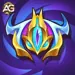
ディストーションのエレメンタルスピリット
物理攻撃力：+299,673 | タイタン1体あたりのパワー：+20,377
PvP育成優先度： 高い — トーテムの育成はオルムだけでなく、ディストーション・コア全体に恩恵を与えます。
ダンジョン育成優先度： 低い — ディストーションは混合部屋にしか登場しません。
おすすめアーティファクト順： ディストーテッド・バランス・シール → クラウン・オブ・ディストーション → ゾルヴァルズ・ライト。エレメンタルスピリットは、ディストーションチーム全体と並行して育成してください。
アレクサンドレ・ゲームズのYouTube動画
▶️動画：オルムはタイタンメタを変えられる？完全攻略ガイド＆育成優先度

オルムにおすすめのエレメンタル・トーテム融合
融合は、メイントーテムに独立したスキルを追加します。オルムは、物理攻撃力、ディストーションの移動圧力、追加の継戦能力から最も大きな恩恵を受けます。
トーテム融合の仕組み
エレメンタルまたはプライマルを選び、希望するスキルを選択してカタリストを投入します。投入するカタリストが多いほど、選択したスキルをより高いランクで獲得できる確率が上がります。2つのトーテムが同じスキルを持つ場合、レベルが高い方だけが発動します。カタリストは消費されますが、結果を拒否して以前のスキル状態へ戻すこともできます。
1位 - メイン・シークエンス
メイン・シークエンスは、味方タイタン全員の攻撃力を永続的に上昇させます。ランクIでは、5秒ごとに攻撃力+146,250を付与します。
ルイナス・ボンドには物理攻撃力10,000%という係数が表示されているため、これが最優先候補です。敵がリンクへ与えるダメージが少ない場合でも、永続的なチームボーナスは役立ちます。
2位 - スターダスト
スターダストは15秒間フィールドを覆い、1秒ごとにランダムなタイタン1体を押し動かし、移動距離に応じて828,750の移動ダメージを与えます。
ディストーションと自然にかみ合うスキルです。プレイナー・ストームと組み合わせると、オルムにリンクされた味方が受けるダメージを20%だけに抑えている間、強制移動によって圧力を生み出せます。
3位 - ザ・デプス・ウィスパー
10秒間の渦が敵へダメージを与え、味方の間で回復を分配します。ランクIの表示値は、1回の発動につき50,312のダメージと合計回復量です。
ルイナス・ボンドは保護しますが、回復はしません。この渦は、保護時間が終了した後にダメージを受けたタイタンを安定させることができます。
アレクサンドレのエレメンタルランキング： メイン・シークエンス → スターダスト → ザ・デプス・ウィスパー。
オルムにおすすめのプライマル・トーテム融合
オルムには、エネルギー、生存力、攻撃力が必要です。これらのプライマルスキルは、オルム自身のスキル構成にないシールドへ依存せず、その3つの要素を支えます。
1位 - プライマル・ジール
基本攻撃後、タイタンがエネルギーを回復する可能性があります。ランクIの表示値は、最大エネルギーの40%と発動率20%です。
オルムは3秒ごとに攻撃するため、頻繁に発動機会を得られます。早くエネルギーを得ることは、リンクを早く発動するか、2回目の発動を狙えることを意味します。
2位 - パルス・オブ・ジ・エンシェンツ
味方タイタンがアビリティを使用すると、そのタイタンが回復します。ランクIの表示値は112,000回復で、最大発動頻度は21秒に1回です。
パルスはルイナス・ボンド後にオルムを回復でき、編成に回復役が不足している場合は特に役立ちます。
3位 - コール・オブ・エレメンツ
失ったHPに応じて攻撃力が上昇します。ランクIの表示値は、最大HPを21%失うごとに攻撃力+2,100です。
オルムはリンクが終了するまで待つ間にHPを失うことがよくあります。この効果は危険な状況を追加の物理攻撃力へ変えますが、負傷した後にしか意味を持たないため3位です。
アレクサンドレのプライマルランキング： プライマル・ジール → パルス・オブ・ジ・エンシェンツ → コール・オブ・エレメンツ。
タイタン、オルム対策 - ヒーローウォーズ：ドミニオン・エラ
オルムが最も危険なのは、ルイナス・ボンドで守られた味方へ継続的なダメージを与える場面です。火、水、大地はディストーションに対して自然な優位性を持ちます。最適な対策は、オルムの攻撃力を低下させる、エネルギーを得る前に圧力をかける、または遅れて返ってくるダメージを耐えることです。
アンガス： 大地は自然な優位性を持ち、アンガスには遅延ダメージを耐えられる耐久力があります。範囲圧力によって、守られた味方だけに集中するのではなく、オルム自身も攻撃できます。
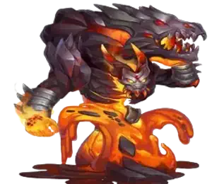
アラジ - 火
アラジ： 火はディストーションを自然に対策できます。繰り返されるリンクが前線を安定させる前にオルムを倒せるだけの圧力を維持することが目的です。
マイリ： 水は属性上の優位性を持ち、アビス・カースは8秒間、敵全員の攻撃力を40%低下させます。これにより、オルムの物理攻撃力によるスケーリングを直接弱体化できます。
オルムのおすすめチーム - ヒーローウォーズ：ドミニオン・エラ
以下は、オルムのターゲット選択、ディストーション・トーテムの発動条件、耐久力の高い前線が必要な点に基づくシナジー重視のおすすめ編成です。無敗を保証するテスト結果ではありません。トーテムの育成、融合スキル、発動タイミング、対戦相手によって各対戦の結果は変わります。
チーム1 - ディストーション・コントロールコア
| オルムのディストーション・コントロールチーム | ||||
|---|---|---|---|---|
| ブルスター | オルム | 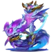 ヴァルドゥル |
アレクト | テネブリス |
| ディストーション・トーテム | エレメンタル： メイン・シークエンス | プライマル： プライマル・ジール | ||
戦略： ブルスターは、オルムが守るための耐久力の高い前方対象になります。オルム、ヴァルドゥル、アレクトでプレイナー・ストームを発動し、ヴァルドゥルがフィールドを分身で満たし、アレクトが後衛を攻撃し、テネブリスがとどめの圧力を加えます。
チーム2 - 防御型混合チーム
| オルムの防御型混合チーム | ||||
|---|---|---|---|---|
| ブルスター | オルム | 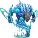 マイリ | モルト | テネブリス |
戦略： ルイナス・ボンドを使用できない間はマイリが敵の攻撃力を下げ、モルトとテネブリスが闇属性のサポートとダメージを追加します。この対戦相手に合わせたチームでは、オルム1体だけでディストーション・トーテムを発動することはできません。
オルム攻略ガイドまとめ
オルムが突き付ける決定的な問いは、「次の6秒間に敵がこちらの前線へどれだけのダメージを与えるか」です。ルイナス・ボンドは、その味方が受けるダメージを20%に軽減し、残りを蓄積して、蓄えた圧力を敵陣中央へ返します。
おすすめ育成ルートは、PvPではデフォルトスキンより先にプライモーディアルスキンを育て、その後にディストーテッド・バランス・シール、クラウン・オブ・ディストーション、ゾルヴァルズ・ライトを強化する順番です。エレメンタル融合ではメイン・シークエンスを推奨し、プライマル融合ではオルムがルイナス・ボンドへ早く到達できるプライマル・ジールを1位にしています。
オルムを、あらゆるダンジョンで使える投資先や自動的な勝利手段として扱わないでください。戦術的なディストーション・サポートが必要で、リンクを活用するために必要な前線の耐久力と構成をすでに用意できている場合に育成しましょう。
注目ガイドで新しいスキルをチェック！
あなたの意見を聞かせてください！
このオルム攻略ガイドは、ルイナス・ボンド、育成優先度、チーム編成を理解する助けになりましたか？検証結果、質問、提案をアレクサンドレ・ゲームズ・ブログのコメントで共有してください。
下のボタンをクリックして開始できます：